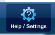
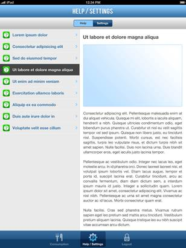

You can access the Help page by clicking on the "Help / Settings" button on the bottom menu of any page in the ISS FIT application:

Alternatively, you may also click on the "Help / Settings" button on the Login page:
Once you're on the Help / Settings page make sure to select the "Help" tab:
The Help page will be displayed:

To read application help, simply click on any of the help article titles listed on the left side of the screen. Your selected help content will be displayed on the right side of the screen.